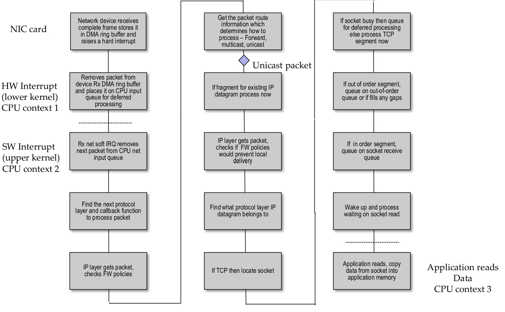
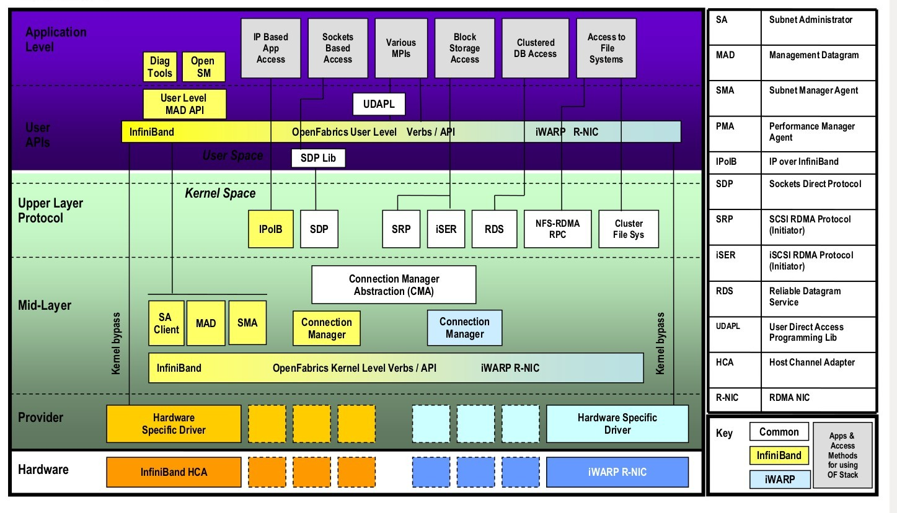

TCP Bypass Notes
Table of Contents
Linux TCP/IP - Send flow (simplified)

Linux TCP/IP – receive flow (simplified)

Linux TCP/IP stack – Tx Call Flow

Linux TCP/IP stack – Rx Call Flow

TCP/IP optimizations
Zero copy
- Avoid copy from User space to kernel space, DMA from/to User space. Issues with holding onto buffers to support TCP retransmission requests, no current API/signalling to tell User space code when it can discard buffer. Implementations available but not in mainstream distributions.
- Only the webserver Use case of Filecopy write to socket available in mainstream since this can DMA from the file buffer cache and can be called directly from the TCP code to release the buffer. Note syntax differences between UNIX implementations cause portability issues.
NIC optimizations
- Interrupt coalescing. Reduces CPU load and can therefore increase throughput where this is a constraint but adversely impacts latency
- NAPI support lowers CPU load by disabling RX interrupts and only polling under high load. Adaptive; resorts back to RX interrupts when load is lowered
- Scatter gather I/O transfers from multiple blocks in a single DMA operation avoiding a kernel memory copy up to the 64K allowed for an IP packet
- Offloads for TCP Segmentation, checksums, Large Receive
- Receive Side Scaling (RSS) spreads RX load across multiple CPUs
By passing TCP/IP
- TCP provides error detection and correction, in-order delivery of data, flow control and congestion management
- IP provides routing, packet chopping and aggregation, error detection and a address namespace
- IP allows us to scale by routing across multiple L2 subnets
- We can only replace TCP/IP by finding alternatives to these
- By limiting to Layer2 networks we can drop IP but need to provide a namespace and still need to overcome any scalability issues
- But Ethernet has no guaranteed delivery and is permitted to arbitrarily drop packets
- Ethernet subnets are rarely extended beyond 1024 addresses due to broadcast issues
- FibreChannel provides error detection, reliable in-order delivery, credit based flow control and a namespace but error recovery is very expensive and it is lacking multicast support
By passing TCP/IP – Four options today
- iWARP - RDMA over Ethernet
- Converged Ethernet – Data Centre Enhanced Ethernet
- GAMMA – Genoa Active Message Machine
- Open-MX – Myricom API
- InfiniBand – Converged interconnect
OFED (Open Fabric Enterprise Distribution) Software Stack

More
- www.openfabrics.org
- www.infinibandta.org
- “RDMA Aware Programming Manual”, www.mellanox.com
- “TCP/IP Architecture, Design and Implementation in Linux”, S. Seth
- “Understanding Linux network internals”, Christian Benvenuti